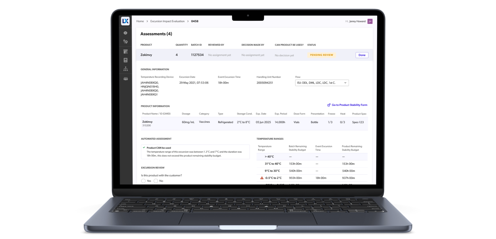

Revolutionizing Temperature Tracking in Cold Chain Logistics
A Collaborative Journey to Streamline Processes and Empower Medical Companies
My Role
Lead Designer
What I did
Lead a project to make it faster and easier to transport medicines around the world and evaluate their quality through Product Design.
Deliverables
Concept
UX Design
UI Design
Prototyping
Design Thinking Workshops
Product Strategy
Created with
Digital Surgeons
Carrier
AWS
Carrier
AWS
TL;DR
Overview
Our team partnered with Carrier to simplify and automate the labor-intensive process of temperature tracking in the cold chain logistics industry. Our user-centered solution slashed labor costs by 80% and reduced evaluation time from days to 7 minutes.
Results
Summary
- Significant reduction in evaluation time—from days to just 7 minutes.
- Consolidation of 10+ systems into a single, efficient source.
- Automation of record creation—reducing the task from 2-3 hours to instant.
- Improved efficiency and accuracy in cold chain logistics.
What if...
We could simplify the complex world of cold chain logistics?
As Carrier’s trusted digital solutions partner, we envisaged a streamlined, automated process for temperature tracking in shipping—transforming the landscape of global medicinal transportation and quality evaluation.
We successfully
Revolutionized temperature tracking, one shipment at a time.
Our solution leveraged the power of technology to automate product temperature tracking, reducing the time taken to complete a temperature excursion evaluation from days to a mere 7 minutes. The result? A high-performing, user-friendly digital tool that is changing the face of cold chain logistics.
The Journey
From Manual Woes to Digital Revolution
Carrier’s SensiTech, designed to monitor temperature during shipping, was a ground-breaking tool, but its manual nature caused issues for medical companies. Our objective was to automate and optimize this process, making it easier and faster for these companies to conduct their operations.
“
It is possible to drive the cost of replacement and cost of investigations down to be insignificant with proactive measures.
It is possible to drive the cost of replacement and cost of investigations down to be insignificant with proactive measures.
Head of Global Trade at Biogen
User Insights & Research
Decoding Needs, Refining Personas
We delved into the operations of Carrier’s client, Amgen, to understand the complexities of temperature tracking. Through intensive workshops, interviews, and user testing with three Lynx customer organizations and 12 separate industry professionals, we developed and refined user personas, setting the foundation for our solution.
Process Simplification: From Workshop Findings to Automation
Transforming Complexities into Efficiencies
Our rigorous workshops alongside illuminated the intricacies of temperature tracking, leading us to reimagine the process, transforming a cumbersome 7-step procedure into a streamlined, automated 5-step journey. This innovative approach ensured swift and precise operations, significantly reducing time and labor costs.
Identifying Key Product Strategies: Designing for Success
Strategizing for Impactful User Engagement
Through exhaustive research and user insights, we identified critical product strategies and features that resonated with the users' needs. Our strategies focused on providing a seamless, user-friendly interface that facilitated easy navigation and improved efficiency, paving the way for a highly successful digital tool in cold chain logistics.
Defining User Journeys: Charting a Path to Success
Crafting Seamless User Experiences
We meticulously outlined user journeys, providing a roadmap that encapsulated users' interactions with the LYNX Logix platform. These journeys, built upon the insights gathered from user interviews and testing, played a crucial role in creating an intuitive, user-friendly digital tool that revolutionized temperature tracking in the logistics industry.
Prototype Design & User Testing
Crafting Seamless User Experiences
We meticulously outlined user journeys, providing a roadmap that encapsulated users' interactions with the LYNX Logix platform. These journeys, built upon the insights gathered from user interviews and testing, played a crucial role in creating an intuitive, user-friendly digital tool that revolutionized temperature tracking in the logistics industry.
“
They truly act as a small army with super powers.
They truly act as a small army with super powers.
Senior Product Manager at Carrier
Atomic Design Integration: Unleashing User-Centric Agility
Harnessing the Power of Atomic Design for Seamless User Experience
Incorporating Atomic Design principles within Carrier's existing design system, we developed an agile, intuitive MARVEL platform. Our user-centric design process, informed by extensive interviews and testing, enabled us to create a highly tailored, scalable solution that revolutionized temperature tracking in the cold chain logistics industry.
I worked with the existing Verge Design System built by the Carrier Foundry team and built off of existing components for additional custom customer features, interactive component states, and Figma components that offered additional scalability (ex. toggleable icon states)
I worked with the existing Verge Design System built by the Carrier Foundry team and built off of existing components for additional custom customer features, interactive component states, and Figma components that offered additional scalability (ex. toggleable icon states)
Triumphant Transformation: Results and Aesthetic Appeal
Leveraging Automation for Effective Temperature Tracking
The culmination of our efforts, the automated temperature tracking system, expedited temperature excursion evaluations from a painstaking process of days to a brisk 7 minutes. The aesthetic appeal and user-friendly interface, a testament to our design expertise, integrated functionality and visual charm, enhancing the overall user experience.
Throughout the 2.5-year long journey, our transparency, agility, and consistently stellar deliverables fortified our relationships with Carrier, AWS, and the clients, solidifying a mutually beneficial partnership.
Throughout the 2.5-year long journey, our transparency, agility, and consistently stellar deliverables fortified our relationships with Carrier, AWS, and the clients, solidifying a mutually beneficial partnership.
The Resounding Impact: Business Value and Insights
Creating Ripples in the Industry
Our software solution was a game-changer for the medical companies, bestowing them with significant time and resource savings. It fortified Carrier's position in the market, drawing new clients, and elevating their competitive edge.
Our team gleaned invaluable insights about the importance of robust user research, effective collaboration, and striking the right balance between user needs and business objectives.
As this project drew to a close, our team basked in the pride of having created a transformative tool that positively impacted numerous lives. The experience and the insights we gained will continue to guide us as we set sail on our next grand endeavor.
Our team gleaned invaluable insights about the importance of robust user research, effective collaboration, and striking the right balance between user needs and business objectives.
As this project drew to a close, our team basked in the pride of having created a transformative tool that positively impacted numerous lives. The experience and the insights we gained will continue to guide us as we set sail on our next grand endeavor.